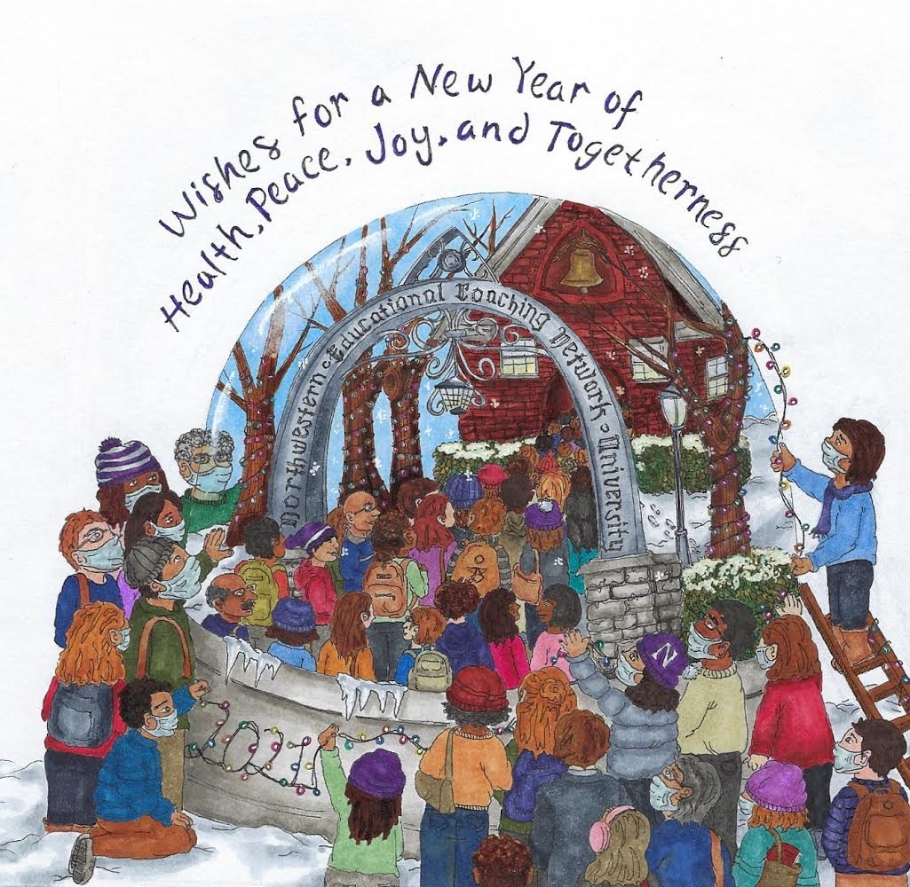

The Daily Cardinal
Click here to view my recent graphics on The Daily Cardinal website. I started illustrating for The Daily Cardinal in September 2019. By April 2020, I had been elected as The Graphics Editor and have illustrated more than 65 graphics!
Recent Pieces

"Iguanas"
This illustration was done in Micron pen and Copic Marker.
"Putin Political Cartoon"
This political cartoon was done in ink using a brush with Copic Marker color isolation.
"Breakfast & Bird Watching"
This illustration was made as a gift for my Nana and Papa .
Commissioned Works

In December of 2020, I was commissioned to create a holiday card illustration for Northwestern's Educational Coaching Network which they sent out to Northwestern faculty.